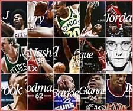

Welcome to the Masterlass of Basketball History

Welcome to B.L.E. The site where we bring recognition to basketball
histories forgotten legacies. Your acces to information and context as to
why these plays names should be remmebered. If you are a fan of the game
of basketball and want to learn more about some of the greatets talents of
the last century, you are in the right place! you can learn about early
greats and pioneers like George Mikan, Bill Russell, and Sam Jones. Or
brush up on recent career players like Dwight Howard, Ben wallace, and
Tracy Mcgrady. With a history of basketball spanning 75 years, there is no
shortage of greatness to berepresented. Have fun expanding your mind!